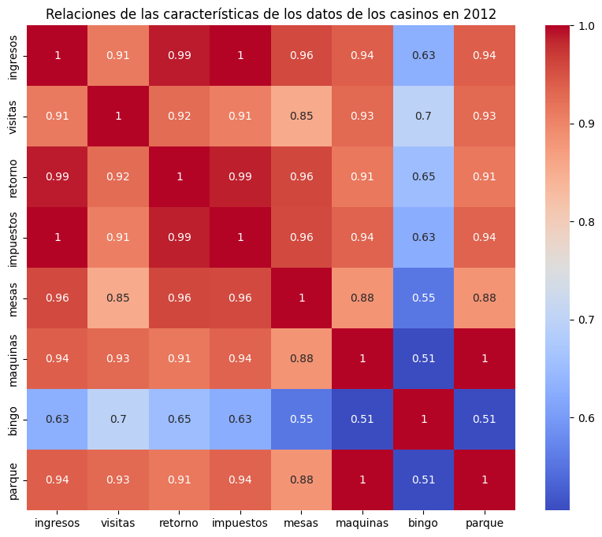

Problema
Explicar la concentración de ingresos, cuantificar las brechas existentes entre casinos, y evaluar la calidad de los datos, posibles problemas éticos a futuro.
Proyecto de Ciencia de Datos
Estudio sobre los juegos de apuestas de los Casinos, con énfasis en el jugador promedio. Se incluyen análisis relacionados a los ingresos, variabilidad y comportamiento de los casinos regulados por la Superintendencia de Casinos de Juego (SCJ).
La Superintendencia de Casinos de Juego (SCJ) publica mensualmente los ingresos brutos de los casinos autorizados. En este proyecto buscamos analizar esos datos, para entender mejor la industria del juego en Chile. Hemos analizado desde las máquinas de azar hasta los ingresos por bingo, por ejemplo. Para cumplir con el propósito de enfocar el estudio de los datos con énfasis en el jugador promedio, hemos incluido datos relacionados al retorno a jugadores y la oferta de juegos en cada casino. También, hemos representado visualmente los Datos para poder extraer conclusiones relevantes, y así entender mejor el comportamiento de los casinos y juegos de azar en Chile. Se han incluido visualizaciones que indican las brechas entre establecimientos, la concentración de ingresos y la variabilidad mensual de diferentes tipos de métricas.
Explicar la concentración de ingresos, cuantificar las brechas existentes entre casinos, y evaluar la calidad de los datos, posibles problemas éticos a futuro.
Estimar magnitud y variabilidad de ingresos en los Casinos, identificar vacíos de información y evaluar la oferta de juegos reportada mediante, por ejemplo, las máquinas de azar y el retorno a jugadores.
- Boletines estadísticos de la SCJ con archivos CSV semi-estructurados: ingresos, visitas y retorno de máquinas, entre otros específicos relacionados al boletín estadífcilo de la SCJ.
Durante el proceso de ETL hubieron varios desafíos de limpieza, como por ejemplo, engabezados repetidos, múltiples tablas por archivo y y formanos a veces insonstente, sobre todo hubo que tratar los valores sin información útil en los conjuntos de datos de manera cuidadosa, ya que no hacerlo, o hacerlo mal, podría ocasionar sesgos en los análisis posteriores. Implementamos un flujo de limpieza robusto con el lenguaje de programación Python para resolver problemas con encabezados de los datos información repetida, múltiples tablas por archivo y formatos inconsistentes en los archivos.
Hemos usado la función split_blocks para separar cada archivo CSV en
múltiples sub-tablas lógicas basadas en separadores, por ejemplo.
Detección automática de encabezados reales y estandarización de
nombres de columnas con clean_column_names.
Transformación de datos numéricos formateados como texto (con puntos y comas) a tipos float válidos para análisis.
Declaramos explícitamente el uso de modelos de lenguaje (GPT-5-Codex y Gemini Flash) para ayudar en ciertas celdas. Específicamente:
split_blocks y load_tables para la lectura de archivos CSV con múltiples bloques y encabezados irregulares.coerce_numeric) para manejar formatos de moneda chilena.matplotlib y seaborn.
Parcialmente: el CSV RetornoMaquinas permite comparar el payout observado por tipo de juego y casino, identificando cuáles retornan más dinero al jugador. Aun así, falta una traza completa de premios pagados para, hilando las ganancias de los jugadores, estimar el retorno efectivo del jugador promedio.
Tampoco se puede responder con este dataset, ya que no se registran montos apostados, únicamente ingresos brutos.
Monticello Grand Casino y el Casino Rinconada superan los 30 mil millones de CLP en 2023, mientras varios casinos regionales se mantienen por debajo de los 6 mil millones.
Sí: los CSV PosicionesJuegos y RetornoMaquinas enumeran posiciones de juego y características de cada máquina, lo que permite describir la oferta disponible en cada operador.
Sí: el coeficiente de variación mensual supera 120% en octubre y agosto, los ingresos están concentrados en dos operadores y los nulos se limitan a enero-marzo (11,1%) y a los totales (5,6%).
Con los datos disponibles solo comparamos variabilidad mensual y participación relativa; faltan variables adicionales para un análisis más profundo.
Podemos responder parcialmente esta pregunta en base al CSV ParqueMaquinas, que detalla el fabricante y procedencia, durante el analisis exploratorio de datos, pudimos darnos cuenta que la mayoría de las máquinas provienen de Estados Unidos, habiendo varios fabricantes como BALLY, SPIELO y WMS que dominan el mercado chileno de máquinas de azar, con mas de un 18% de participación cada uno.
Detectamos un patrón de valores faltantes significativo en los primeros meses del año, en enero y marzo, por lo que tuvimos que, optar por otras estrategias, como la imputación o trabajar solo con totales anuales.
La distribución de ingresos totales muestra una fuerte asimetría, indicando que unos pocos casinos concentran la mayor parte del mercado nacional, aquí se puede apreciar en la gráfica.
.png)
El Coeficiente de Variación (CV) nos permite ver qué tan estables son los ingresos para los casinos a lo largo del año, nos dice qué tan volátiles son. Analizamos el CV para que sea por mes, o por cada casino. Observamos mayor volatilidad en ciertos meses y casinos específicos, y podemos ver patrones de comportamiento estacionales en la industria de los juegos de apuestas.
Esta visualización muestra un mapa de calor que muestra la participación relativa de cada mes en el total anual por casino, revelando patrones estacionales de participación.
Existe una alta concentración de ingresos en casinos específicos, pero la variabilidad mensual de los ingresos sugiere estacionalidad en ciertos establecimientos, posiblemente turísticos, mientras que otros mantienen flujos menos irregulares. El Coeficiente de Variación (CV) revela que octubre y agosto son los meses más volátiles.
Incorporar datos actualizados, cruzar información con indicadores macroeconómicos (IMACEC) y modelar la demanda de juegos con modelos de inteligencia artificial más potentes, posiblemente incluyendo variables demográficas y de comportamiento. Nuestro objetivo fue parcial, nos falta mucho camino para poder encontrar la mejor estrategia de apuesta para el jugador promedio, así que futuros análisis podrían enfocarse en entender mejor el comportamiento del jugador promedio en los casinos de Chile.
¿Para que se hizo la regresión lineal y la matriz de correlación?
La regresión lineal se utilizó para evaluar cómo las variables de los casinos (como lo son las visitas, retorno de máquinas, impuestos y número de posiciones de juego) se relacionan con sus ingresos brutos anuales, asi como también hicimos una matriz de correlación. Para esto se construyó un dataset final unificando la información de los CSV y normalizando los valores numéricos para poder trabajar con ellos. Una vez formado el dataset, se entrenó un modelo de regresión lineal múltiple usando un 80% de los datos para entrenamiento y el restante 20% para prueba, y lo que obtuvimos como se puede observar fue un R² de aproximadamente 0.98, que para neustro contexto, esto nos dice que el modelo explica casi el 98% de la variabilidad de los ingresos. Respecto a el RMSE, obtuvimos un valor de al rededor de 240 millones, equivalente a cerca del 3.6% del ingreso promedio del conjunto de prueba, por lo que el error es coherente.
Los resultados muestran que los juegos más asociadas a los ingresos son principalmente las maquinas, mesas y el parque, asi como el total de visitas, mientras que bingo tiene menor efecto, esto nos podría decir varias cosas, se podría decir que los bingos al haber siempre un ganador no es que genere tantas ganancias, o también puede ser por la poca cantidad de Bingos que se han hecho comparado a las Maquinas y al parque, esto parece tener mucho más sentido.
Matriz de Correlación (Variables vs Ingresos)
En lugar de trabajar con los datos mes a mes, optamos por usar los totales anuales por casino, ya que nuestro objetivo es comparar el desempeño global de cada casino en un año, y no estudiar la evolución temporal mes a mes. Además, al agregar por año se reduce el ruido estacional y se se toma en cuenta en el analisis la independencia de cada casino (que los casinos son distintos), ya que cada fila del modelo corresponde a un casino distinto (valga la redundancia). En si, trabajar con datos mensuales habría requerido modelos más complejos de panel o series de tiempo.
Con total honestidad, esta parte del notebook se decidió hacer desde 0 debido a unos fallos en las lecturas con respecto a lo que nos interesa con respecto a la regresión lineal, ya que las funciones anteriores se hicieron para obtener todos los datos, esta parte se hizo solo en base a lo que nos importaba para la regresión lineal.
Si, totalmente. Ignorando el hecho de que esta regresión lineal solo se hizo en base al año 2012 en su totalidad y no como linea temporal mes a mes, si hubiesemos disponido de años anteriores o posteriores, podríamos ver el desarrollo/cambio año tras año en mejor escala, aunque para lo que seleccionamos está totalmente correcto. También pudimos haber encontrado mas datos de casinos de otros paises, para ver si estas conclusiones eran las mismas que con chile.
Se ha utilizado como LLM GPT-5-Codex y Gemini Flash, en su mayoría está su uso citado en las celdas de MarkDown, como también en comentarios de las funciones o líneas de código generadas con esa herramienta, pero en su mayoría se ha utilizado para solucionar errores en los tipos de datos.